CONCEPTOS FUNDAMENTALES DE ÁLGEBRA
En álgebra usamos símbolos o letras, por ejemplo a, b, c, d, x, y, para denotar números arbitrarios. Esta naturaleza general del álgebra está ilustrada por las numerosas fórmulas empleadas en ciencia y la industria. A medida que el lector avance en este texto y pase a cursos más avanzados en matemáticas, o a campos de actividad donde se utilizan matemáticas, estará cada vez más consciente de la importancia y poder de las técnicas algebraicas.
Notación Algebraica
Notación Algebraica
SIGNOS DE OPERACIÓN
En Álgebra se verifican con las cantidades las mismas operaciones que en Aritmética: Suma, resta, multiplicación, división, elevación de potencias y extracción de raíces, que se indican con los signos siguientes.
SIGNOS DE RELACIÓN
Se emplean estos signos para indicar la relación que existe entre dos cantidades. Los principales son:
SIGNO DE AGRUPACION
• Estos signos indican que la operación colocada entre ellos debe efectuarse primero. Así, (a+b)c indica que el resultado de la suma de a y b debe multiplicarse por c.
VALOR ABSOLUTO Y VALOR RELATIVO
CANTIDADES ARITMÉTICAS Y ALGEBRAICAS
Los signos + y – tienen en álgebra dos aplicaciones: indicar las operaciones de suma y resta, e indicar el sentido o condición de las cantidades.
NOMENCLATURA ALGEBRAICA
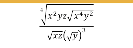
CLASES DE TÉRMINOS
CLASIFICACIÓN DE LAS EXPRESIONES ALGEBRAICAS
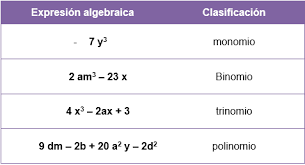
LEYES DE LOS EXPONENTES Y RADICALES
Las leyes de los exponentes y radicales establecen una forma simplificada o resumida de trabajar una serie de operaciones numéricas con potencias, las cuales siguen un conjunto de reglas matemáticas.
Por su parte, se denomina potencia a la expresión an, (a) representa el número base y (n o enésima) es el exponente que indica cuántas veces se debe multiplicar o elevar la base según lo expresado en el exponente.
LEYES DE EXPONENTES
La finalidad de las leyes de los exponentes es resumir una expresión numérica que, si se expresa de manera completa y detallada sería muy extensa. Por esta razón es que en muchas expresiones matemáticas se encuentran expuestas como potencias.
Ejemplos:
5² es lo mismo que (5) ∙ (5) = 25. Es decir, se debe multiplicar 5 dos veces.
2³ es lo mismo que (2) ∙ (2) ∙ (2) = 8. Es decir, se debe multiplicar 2 tres veces.
De esta manera, la expresión numérica es más simple y menos confusa para resolver.
1. Potencia con exponente 0
Cualquier número elevado a un exponente 0 es igual a 1. Cabe destacar que la base siempre debe ser diferente a 0, es decir a ≠ 0.
Ejemplos:
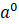 = 1
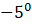= 1
2. Potencia con exponente 1
Cualquier número elevado a un exponente 1 es igual a sí mismo.
Ejemplos:
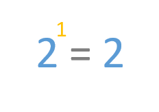
3. Producto de potencias de igual base o multiplicación de potencias de igual base
¿Qué pasa si tenemos dos bases (a) iguales con diferentes exponentes (n)? Es decir, ∙ 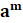 . En este caso, las bases iguales se mantienen y se suman sus potencias, es decir: an ∙ am = an+m.
Ejemplos:
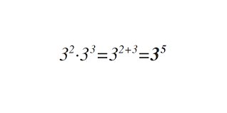
Esto sucede porque el exponente es el indicador de cuántas veces se debe multiplicar el número base por sí mismo. Por tanto, el exponente final será la suma o resta de los exponentes que tienen una misma base.
4. División de potencias de igual base o cociente de dos potencias con igual base
El cociente de dos potencias de igual base es igual a elevar la base según la diferencia del exponente del numerador menos el denominador. La base debe ser diferente a 0.
Ejemplos:


5. Potencia de un producto o Ley distributiva de la potenciación con respecto de la multiplicación
Esta ley establece que la potencia de un producto debe ser elevada al mismo exponente (n) en cada uno de los factores.
Ejemplos:
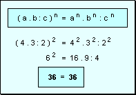
6. Potencia de otra potencia
Se refiere a la multiplicación de potencias que tienen las mismas bases, de la cual se obtiene una potencia de otra potencia.
Ejemplos:
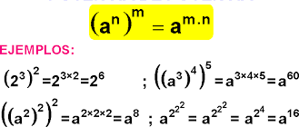
7. Ley del exponente negativo
Si se tiene una base con un exponente negativo (a-n) se debe tomar la unidad divida entre la base que será elevada con el signo del exponente en positivo, es decir 1/an . En este caso, la base (a) debe ser diferente a 0, a ≠ 0.
Ejemplo: 2-3 expresado en fracción queda como:

Leyes de los radicales
La ley de los radicales se trata de una operación matemática que nos permite hallar la base a través de la potencia y el exponente.
Los radicales son las raíces cuadras que se expresan de la siguiente manera √, y consiste en conseguir un número que multiplicado por sí mismo dé como resultado lo que está en la expresión numérica.
Por ejemplo, la raíz cuadrada de 16 se expresa de la siguiente manera: √16 = 4; esto significa que 4.4 = 16. En este caso no es necesario indicar el exponente dos en la raíz. Sin embargo, en el resto de las raíces sí.
Por ejemplo:
La raíz cúbica de 8 se expresa de la siguiente manera: 3√8 = 2, es decir, 2 ∙ 2 ∙ 2 = 8
Otros ejemplos:
n√1 = 1, ya que todo número multiplicado por 1 es igual a sí mismo.
n√0 = 0, ya que todo número multiplicado por 0 es igual a 0.
1. Ley de cancelación del radical
Una raíz (n) elevada a la potencia (n) se cancela.
Ejemplos:
(n√a )n = a.
(√4 )2 = 4
(3√5 )3 = 5
2. Raíz de una multiplicación o producto
Una raíz de una multiplicación se puede separar como una multiplicación de raíces, sin importar el tipo de raíz.
Ejemplos:


3. Raíz de una división o cociente
La raíz de una fracción es igual a la división de la raíz del numerador y de la raíz del denominador.
Ejemplos:


4. Raíz de una raíz
Cuando dentro de una raíz hay una raíz se pueden multiplicar los índices de ambas raíces a fin de reducir la operación numérica a una sola raíz, y se mantiene el radicando.
Ejemplos:


5. Raíz de una potencia
Cuando se tiene dentro de una raíz un número elevado un exponente, se expresa como el número elevado a la división del exponente entre el índice del radical.
Ejemplos:


EXPRESIONES ALGEBRAICAS

Definición 1
Una expresión algebraica es una combinación de letras ó letras y números unidos por medio de las operaciones: suma, resta, multiplicación, división, potenciación ó radicación, de manera finita.
Usualmente las primeras letras de nuestro alfabeto: a, b, c, d, etc. si no se dice otra cosa, representan valores fijos en la expresión. Estas letras también se pueden llamar parámetros.
Las últimas letras de nuestro alfabeto: x, y, z, u otros símbolos, representan variables que pueden tomar valores dentro de un subconjunto de números reales.
Definición 2
El dominio de una variable en una expresión algebraica, es un subconjunto de números reales, que al reemplazarlos en la expresión, siempre se obtiene un número real.
Es conveniente dar el dominio de cada una de las variables contenidas en una expresión algebraica.
Ejemplos
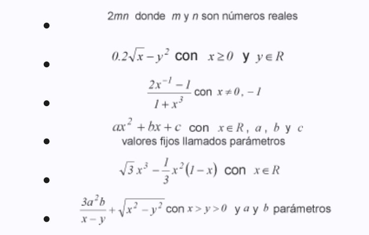
Definición 3
Dos expresiones algebraicas son equivalentes cuando toman ambas el mismo valor numérico, para cualquier valor del dominio de cada una de las variables.
Ejemplo 1
Las expresiones  y x + 1, x ≠ 1 son equivalentes, porque:
y x + 1, x ≠ 1 son equivalentes, porque:  si x = 3 y x + 1 = 3 + 1 = 4 si x = 3.
si x = 3 y x + 1 = 3 + 1 = 4 si x = 3.
Se observa que ambas toman el mismo valor, y esto se cumplirá para todo x diferente de 1, por lo tanto las dos expresiones son equivalentes.
Ejemplo 2
Las expresiones  son equivalentes, porque:
son equivalentes, porque:  si
si  y
y  si
si  .
.
Se observa que ambas toman el mismo valor, y esto se cumplirá para todo x + y ≠ 0. Por lo tanto las dos expresiones son equivalentes.
Ejemplo 1
Las expresiones  y x + 1, x ≠ 1 son equivalentes, porque:
y x + 1, x ≠ 1 son equivalentes, porque:  si x = 3 y x + 1 = 3 + 1 = 4 si x = 3.
si x = 3 y x + 1 = 3 + 1 = 4 si x = 3.
Se observa que ambas toman el mismo valor, y esto se cumplirá para todo x diferente de 1, por lo tanto las dos expresiones son equivalentes.
Ejemplo 2
Las expresiones  son equivalentes, porque: si
son equivalentes, porque: si  y
y  si
si  .
.
Se observa que ambas toman el mismo valor, y esto se cumplirá para todo x + y ≠ 0. Por lo tanto las dos expresiones son equivalentes.
Definición 4
Un término es una constante o un producto de variables o un producto entre variables y constantes o el producto entre dos expresiones algebraicas.
Ejemplo 3
Son términos las siguientes expresiones:  con x ≥ 0,
con x ≥ 0,  con x ≥ 0.
con x ≥ 0.
Definición 5
Términos semejantes son términos que tienen su parte literal o variable, idéntica. Parte variable idéntica significa que aparecen las mismas variables elevadas respectivamente a iguales potencias, y estas ligadas con las mismas operaciones.
Ejemplos
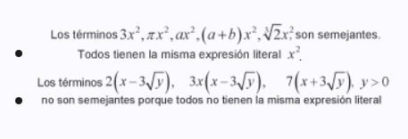
Otros Ejemplos:
- Los términos  , son términos semejantes porque todos tienen la misma expresión literal
, son términos semejantes porque todos tienen la misma expresión literal  .
.
- Los términos  son términos semejantes porque todos tienen la misma expresión literal
son términos semejantes porque todos tienen la misma expresión literal  .
.

Simplificar una expresión algebraica, consiste en escribirla como otra expresión algebraica equivalente, más simple.
Para obtener la forma más simple equivalente de una expresión algebraica, se toma cada uno de los términos y en lo posible escribirlos de tal manera que sean semejantes (sus partes literales iguales), para luego aplicarles las operaciones indicadas en la expresión algebraica original.
Al simplificar una expresión algebraica se deben tener en cuenta las reglas de los números como también las reglas de la potenciación y de la radicación.
Ejemplo 1
Simplifique con un sólo término la expresión algebraica  .
.
Solución:

Ejemplo 2
Simplifique con un sólo término la expresión algebraica  .
.
Solución:

La expresión obtenida, es la simplificación con un sólo término de  . La restricción b > 0 garantiza que la expresión √b es un número real y diferente de cero (porque √b es un denominador de la expresión original).
. La restricción b > 0 garantiza que la expresión √b es un número real y diferente de cero (porque √b es un denominador de la expresión original).
Ejemplo 3
Simplifique a un sólo término la expresión algebraica  con a ≥ b.
con a ≥ b.
Solución:

La expresión 0.7b, es la simplificación con un sólo término de la expresión  con a ≥ b.
con a ≥ b.
Ejemplo 4
Simplifique con un sólo término la expresión algebraica  con x ≠ 0.
con x ≠ 0.
Solución:

La expresión algebraica  es la simplificación, con un sólo término, de la expresión
es la simplificación, con un sólo término, de la expresión  . La restricción x ≠ 0, nos garantiza que el denominador no puede ser cero.
. La restricción x ≠ 0, nos garantiza que el denominador no puede ser cero.

Ejemplo 1
Simplifique con un sólo término la expresión algebraica a (-3b) -2ab.
Solución:

La expresión es la simplificación con un sólo término de la expresión a (-3b) -2ab, para todo valor de a y b.
Ejemplo 2
Simplifique con un sólo término la expresión algebraica  .
.
Solución:

La expresión
Ejemplo 3
Simplifique a un sólo término la expresión algebraica  con a ≥ 0, b ≠ 0 y c > 0.
con a ≥ 0, b ≠ 0 y c > 0.
Solución:

La expresión
Ejemplo 4
Simplifique con un sólo término la expresión algebraica 
Solución:

La expresión es la simplificación con un sólo término de la expresión

Un polinomio de grado n en la variable x, es de la forma:

donde:
Cada término de un polinomio en dos variables, es de la forma
Cada término de un polinomio en tres o más variables se define en forma similar.
Ejemplos
Las siguientes expresiones algebraicas, son polinomios:
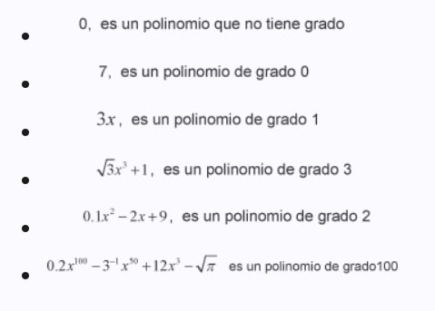
Son polinomios en una variable con coeficientes reales. Se observa además que todos los exponentes son números enteros no negativos.
Las siguientes expresiones algebraicas NO son polinomios:
 , NO es un polinomio, porque el exponente de la variable x no es un número natural.
, NO es un polinomio, porque el exponente de la variable x no es un número natural.
 , NO es polinomio, porque la variable x en uno de los términos tiene un exponente negativo.
, NO es polinomio, porque la variable x en uno de los términos tiene un exponente negativo.
 , NO es polinomio, porque la variable x en uno de los términos tiene un exponente racional no entero.
, NO es polinomio, porque la variable x en uno de los términos tiene un exponente racional no entero.
 , NO es un polinomio, porque la expresión
, NO es un polinomio, porque la expresión  (aunque es un polinomio) está afectada completamente por una raíz cuadrada.
(aunque es un polinomio) está afectada completamente por una raíz cuadrada.

Para hallar el valor numérico de una expresión algebraica, se reemplaza el valor dado de la(s) letra(s) y se realizan las operaciones indicadas en la expresión, ahora, entre números, El valor obtenido, es el valor numérico de la expresión dada.
Ejemplo 1
Evalúe la expresión  para x = -1.
para x = -1.
Solución:

Luego el valor numérico de la expresión
Ejemplo 2
Evalúe la expresión  para x = -2.
para x = -2.
Solución:

El valor numérico de la expresión dada es -16.
Ejemplo 3
Evalúe la expresión (1 - √x)(1 + √x) para x = 2.
Solución:

El valor numérico de la expresión dada es -1.
Ejemplo 4
Evalúe la expresión  , para a = -2 .
, para a = -2 .
Solución:

El valor numérico de la expresión dada es 8.

SUMA DE EXPRESIONES ALGEBRAICAS
Para sumar dos o más expresiones algebraicas con uno o más términos, se deben reunir todos los términos semejantes que existan, en uno sólo. Se puede aplicar la propiedad distributiva de la multiplicación con respecto de la suma.
Ejemplo
Efectúe las operaciones indicadas y simplifique:

Solución:

Luego
MULTIPLICACIÓN DE EXPRESIONES ALGEBRAICAS
Para multiplicar expresiones algebraicas con uno o más términos usar la propiedad distributiva de la multiplicación con respecto de la suma, las reglas de los exponentes como también los productos notables.
PRODUCTOS NOTABLES
Sean  y
y  expresiones algebraicas entonces:
expresiones algebraicas entonces:
PN1: 
PN2: 
PN3: 
Ejemplo 1
Efectúe la operación: 2x(3 - x).
Solución:

Luego

Ejemplo 2
Efectúe la siguiente operación 
Solución:

Entonces:

Ejemplo 3
Efectúe la siguiente operación 
Solución:

Entonces:

Ejemplo 4
Efectúe la siguiente operación 
Solución:

Entonces:

Ejemplo 5
Efectúe las operaciones indicadas y simplifique 
Solución:

Entonces:

Ejemplo 6
Efectúe las operaciones indicadas y simplifique: 2(a - 2) - 5(1 - 4)
Solución:

Entonces 2(a - 2) - 5(1 - 4) = 7a - 9
Ejemplo 7
Efectúe la siguiente operación y simplifique 
Solución:

Entonces:

Ejemplo 8
Efectúe la siguiente operación 
Solución:

Entonces: 

El proceso para escribir expresiones algebraicas únicamente como un producto de otras expresiones algebraicas, se denomina factorización. Un número natural mayor que 1 es primo, si sus únicos factores enteros positivos son el 1 y el mismo.
Ejemplo
Los números 2, 3, 5, 7, 11, 13,… son números primos porque cada uno de ellos tiene como únicos factores al 1 y a ellos mismos. Un número no primo se dice que está completamente factorizado, si está representado como un producto de factores primos. Una expresión algebraica está completamente factorizada si está representada equivalentemente por un producto de expresiones irreducibles. Toda expresión de la forma es irreducible (no es factorizable). Toda expresión de la forma ax ² + bx + c es irreducible si b ² - 4ac < 0.
PROCEDIMIENTO PARA FACTORIZAR EXPRESIONES ALGEBRAICAS
Al expresar dos o más expresiones algebraica únicamente como un producto de expresiones algebraicas, se puede proceder de la siguiente manera:
1. Obtener los factores numéricos y literal que aparezcan en todos los términos de la expresión dada, si existen, lo que genera el conocido término llamado factor común.
2. Al sacar este factor común, si existe, la expresión original será equivalente al producto entre este factor común y otra expresión algebraica. Esta expresión no tendrá ningún factor común y por lo tanto debe descomponerse en otros factores, si es posible.
Al descomponer en factores o factorizar una expresión, se pueden considerar las siguientes formas:
Considere que A, B y C son números enteros,  expresiones algebraicas:
expresiones algebraicas:
F1 Diferencia de cuadrados: 
F2 Trinomio cuadrado perfecto: 
F3 Trinomio con coeficiente principal: a = 1

F4 Trinomio con coeficiente principal: a ≠ 1

F5 Suma y diferencia de cubos: 
FACTORIZACIÓN DE POLINOMIOS
Se dice que un polinomio es primo o irreducible con respecto a un conjunto dado de números si:
1. Tiene coeficientes en ese conjunto.
2. No se puede escribir como producto de dos polinomios con coeficientes de ese conjunto.
Ejemplo 1
El polinomio 2x - 1, es un polinomio primo en los enteros .
El polinomio x ² - 2, es un polinomio primo en los enteros y en los racionales, porque no se puede factorizar en estos conjuntos de números.
Pero x ² - 2 si es factorizable en los irracionales porque existen los factores primos (x - √2) , (x + √2) en los irracionales tales que: x ² = (x - √2)(x + √2) Un polinomio no primo está completamente factorizado con respecto a un conjunto dado de números, si está representado únicamente como un producto de polinomios primos respecto a ese conjunto determinado.
Ejemplo 2
Factorice completamente el número 30.
Solución:
El número 30 no es primo porque acepta como divisores fuera del 1 y del mismo 30, los números primos 2, 3 y 5.
Luego: 30 = 2 * 3 * 5 .
Ejemplo 3
Factorice completamente 3x - √27.
Solución:

La factorización de 3x - √27 es 3(x - √3) .
Ejemplo 4
Factorice completamente el polinomio 
Solución:

Entonces:

Ejemplo 5
Factorice completamente la expresión 
Solución:

Entonces:

FACTORIZACIÓN DE POLINOMIOS DE LA FORMA :
Si el coeficiente B = a + b y C = ab con a y b números enteros, entonces

La factorización de todo trinomio de la forma x ² + (a + b)x + ab es (x + a)(x + b) con a y b enteros.
FACTORIZACIÓN DE UN TRINOMIO DE LA FORMA :

si existen los números enteros A, B, C y D, tales que: AC = a, AD + BC = b y BD = c.
Si AC = a y BD = c se cumple AD + BC = c, entonces se puede asegurar que la factorización de ax ² + bx + c con a ≠ 1, es (Ax + B)(Bx + D)
Ejemplo 1
Factorice el trinomio x ² - 4x + 3 en los números enteros.
Solución:

La factorización de x ² - 4x + 3 es (x - 1)(x - 3)
Ejemplo 2
Factorice completamente la expresión  .
.
Solución:

La factorización de
Ejemplo 3
Factorice completamente el polinomio 18x ² - 9x - 2 en los números enteros.
Solución:

Entonces la factorización de 18x ² - 9x - 2 , es (6x + 1)(3x - 2).
Ejemplo 4
Factorice completamente la siguiente expresión (2 + x ²) ² - 5(2 + x ²) - 6 en los números enteros.
Solución:

Entonces la factorización de (2 + x ²) ² - 5(2 + x ²) - 6 , es (x - 2)(x + 2)(x ² + 3).
DIFERENCIA DE CUADRADOS
Ejemplo
Factorice con tres factores (2x ² + 3x + 1) ² - 4(x ² + 1) ² en los números enteros.
Solución:

La factorización de la expresión dada (2x ² + 3x + 1) ² - (x ² + 1) ² con tres factores es x(x + 3)(3x ² + 3x + 2) y es completa porque el polinomio (3x ² + 3x + 2) es irreducible.
TRINOMIO CUADRADO PERFECTO
Todo trinomio de la forma ax ² ± bx + c es un trinomio cuadrado perfecto si es equivalente con (Ax ± B) ², donde A ² = a, B ² = c y 2AB ² = b o equivalente a A = √a, B = √c y 2√a√c = b .
Es decir, si 2√a√c = b, entonces ax ² ± bx + c es un trinomio cuadrado perfecto.
¿El polinomio 9 - 12x + 4x ² es un trinomio cuadrado perfecto?
Solución:

FACTORIZACIÓN DE UNA SUMA Y DIFERENCIA DE CUBOS
Ejemplo: Factorice la siguiente expresión algebraica  .
.
Solución:

La factorización de
FACTORIZACIÓN DE UNA EXPRESIÓN ALGEBRAICA
Ejemplo
Factorice la siguiente expresión
(x - y) ² (a - 2b) + (x + y) ² (a - 2b) - 2(x - y) ² (a - 2b)
Solución:

Entonces la factorización de la expresión original:
(a - 2b)[(x - y) ² + (x + y) ² - 2(x - y) ²] = -4xy(a - 2b)
FACTORIZACIÓN DE EXPRESIONES NO POLINOMICAS
Ejemplo: Factorice con tres factores la siguiente expresión  con x > 1.
con x > 1.
Solución:

La factorización de
FACTORIZACIÓN CON TRES FACTORES DE EXPRESIONES NO POLINOMICAS
Ejemplo: Factorice completamente la siguiente expresión 
Solución:

La factorización de

EXPRESIONES FRACCIONARIAS

Definición 1
Una expresión fraccionaria es el cociente de dos expresiones algebraicas. El dominio de una expresión fraccionaria es el conjunto formado por todos los valores de la variable o variables que hacen que la expresión fraccionaria sea un número real.
Ejemplo 1
Determine el dominio de cada expresión fraccionarias.
a) 
b) 
Solución:
a) Para que el numerador √x + 2 sea un número real se necesita que x ≥ 0 por que aparece la expresión √x , y como el denominador x - 5 debe ser diferente de cero se requiere que x ≠ 5.
Por lo tanto el dominio de  es el conjunto
es el conjunto
D =  .
.
b) El numerador  representa un número real para cualquier valor real de x, como el denominador x ² - 4 = (x + 2)(x - 2) debe ser diferente de cero entonces x ≠ 2, x ≠ -2.
representa un número real para cualquier valor real de x, como el denominador x ² - 4 = (x + 2)(x - 2) debe ser diferente de cero entonces x ≠ 2, x ≠ -2.
Por lo tanto, el dominio de  es el conjunto
es el conjunto  .
.
Un caso particular de expresión fraccionaria es una expresión racional que es el cociente de dos polinomios.
Ejemplo 2
Determine el dominio de las expresiones racionales.
a) 
b) 
Solución:
a) El numerador x + 2 representa un número real para cualquier valor real de x, como el denominador x + 1 debe ser distinto de cero entonces x ≠ 1.
Por lo tanto el dominio de  es el conjunto
es el conjunto  .
.
b) El numerador 6x - 10 representa un número real para cualquier valor real de x, como el denominador x ² + 1 es siempre mayor o igual que 1 para cualquier valor real x, entonces el dominio de  es el conjunto de los reales.
es el conjunto de los reales.
Definición 2
El Mínimo común múltiplo (mcm) de las expresiones algebraicas  es la expresión algebraica más pequeña que es múltiplo de las expresiones
es la expresión algebraica más pequeña que es múltiplo de las expresiones  .
.
Para determinar el mcm de varias expresiones algebraicas, se factoriza cada expresión como el producto de factores primos y luego se forma el producto de los factores primos iguales y distintos de las expresiones, empleando el exponente más grande que aparezca en cada factor.
Ejemplo 3
Determine el mínimo común múltiplo de 3, 4 y 18.
Solución: Primero se factoriza

El mcm de 3, 4, y 18 es 2² * 3² = 36, es decir, que 36 es el número más pequeño que es múltiplo de 3, 4 y 18.
Ejemplo 4
Determine el mínimo común múltiplo de x + 3 y x ² - 9.
Solución: Primero se factoriza

El mcm de x + 3 y x ² - 9 es (x + 3)(x - 3) = x ² - 9, es decir, que x ² - 9 es la expresión más pequeña que es múltiplo de x + 3 y x ² - 9.
Ejemplo 5
Determine el mínimo común múltiplo de  .
.
Solución: La factorización de las expresiones es:

El mcm de
Ejemplo 6
Determine el mínimo común múltiplo de  .
.
Solución: La factorización de las expresiones es:

El mcm de  es x ² (x + 2) ², es decir, que x ² (x - 2)(x + 2) ² es la expresión más pequeña que es múltiplo de
es x ² (x + 2) ², es decir, que x ² (x - 2)(x + 2) ² es la expresión más pequeña que es múltiplo de 
Definición 3
El Mínimo común denominador (mcd) de varias expresiones fraccionarias es el mínimo común múltiplo (mcm) de los denominadores de las expresiones fraccionarias.
Ejemplo 7
Determine el mínimo común denominador de  .
.
Solución:
Los denominadores son 3, 4 y 18.
El mínimo común múltiplo de 3, 4 y 18 es 36 (ver Ejemplo 3).
Por lo tanto, el mcd de  , es 36.
, es 36.
Ejemplo 8
Determine el mínimo común denominador de  .
.
Solución: Los denominadores son x + 3 y x ² - 9.
El mínimo común múltiplo de x + 3 y x ² - 9 es x ² - 9. (ver Ejemplo 4).
Por lo tanto, el mcd de  , es x ² - 9.
, es x ² - 9.
Ejemplo 9
Determine el mínimo común denominador de  .
.
Solución: Los denominadores son  .
.
El mínimo común múltiplo de  es
es  . (ver Ejemplo 5).
. (ver Ejemplo 5).
Por lo tanto, el mcd de  , es
, es  .
.
Ejemplo 10
Determine el mínimo común denominador de  .
.
Solución: Los denominadores son  .
.
El mínimo común múltiplo de  es x ² (x - 2)(x + 2) ². (ver Ejemplo 6).
es x ² (x - 2)(x + 2) ². (ver Ejemplo 6).
Por lo tanto, el mcd de  , es x ² (x - 2)(x + 2) ².
, es x ² (x - 2)(x + 2) ².

REGLA 1. EL OPUESTO DE UNA EXPRESIÓN FRACCIONARIA.
Si A y B son expresiones algebraicas, 
Es decir el signo – de una expresión fraccionaria se puede colocar en el numerador o en el denominador.
Ejemplo 11
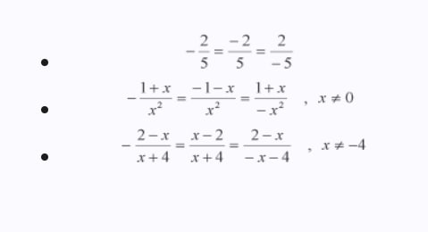

REGLA 2. EQUIVALENCIA DE EXPRESIONES FRACCIONARIAS.
Si A, B y C son expresiones algebraicas,  , con B ≠ 0 y C ≠ 0.
, con B ≠ 0 y C ≠ 0.
Ejemplo 12
Simplificar  .
.
Solución:

Ejemplo 13
Simplificar  .
.
Solución: El dominio de la expresión fraccionaria es el conjunto 

Por lo tanto,
Ejemplo 14
Halle una fracción equivalente a la fracción  de tal manera que su denominador sea 2(x - 1)(x + 5).
de tal manera que su denominador sea 2(x - 1)(x + 5).
Solución: En este caso por equivalencia de expresiones fraccionarias se multiplica el numerador y el denominador por 2(x - 1) así:


REGLA 3. MULTIPLICACIÓN DE EXPRESIONES FRACCIONARIAS.
Si A, B, C y D son expresiones algebraicas,  con B ≠ 0 y D ≠ 0.
con B ≠ 0 y D ≠ 0.
Ejemplo 15
Calcule  .
.
Solución:

Ejemplo 16
Calcule  .
.
Solución: El dominio de la variable es el conjunto 

Por lo tanto,  con x ≠ 1 y x ≠ 0.>
con x ≠ 1 y x ≠ 0.>

REGLA 4. SUMA Y RESTA DE EXPRESIONES FRACCIONARIAS CON IGUAL DENOMINADOR.
Si A, B, C y D son expresiones algebraicas,  y
y  con B ≠ 0.
con B ≠ 0.
Ejemplo 17
Calcule  .
.
Solución:

Ejemplo 18
Calcule  .
.
Solución: El dominio de la variable es el conjunto 

Por lo tanto,
 .
.

REGLA 5. DIVISIÓN DE EXPRESIONES FRACCIONARIAS.
Si A, B, C y D son expresiones algebraicas,  con B ≠ 0, D ≠ 0 y C ≠ 0.
con B ≠ 0, D ≠ 0 y C ≠ 0.
Otra notación es  .
.
Ejemplo 19
Calcule  .
.
Solución:

Ejemplo 20
Calcule  .
.
Solución: El dominio de la variable es el conjunto 

Por lo tanto,  con x ≠ 0, x ≠ -1 y x ≠ 1/2.
con x ≠ 0, x ≠ -1 y x ≠ 1/2.

REGLA 6. SUMA Y RESTA DE EXPRESIONES FRACCIONARIAS CON DENOMINADORES DISTINTOS.
Si A, B, C y D son expresiones algebraicas entonces,
 con B ≠ 0 y D ≠ 0.
con B ≠ 0 y D ≠ 0.
 con B ≠ 0 y D ≠ 0.
con B ≠ 0 y D ≠ 0.
Ejemplo 21
Calcule  .
.
Solución:

Ejemplo 22
Calcule  .
.
Solución: El dominio de la variable es el conjunto 

Por lo tanto,
 con x ≠ 2, x ≠ -2 y x ≠ 0.
con x ≠ 2, x ≠ -2 y x ≠ 0.Otro método para resolver el Ejemplo 22 es usando el mínimo común denominador mcd de las dos expresiones fraccionarias, y consiste en sustituir las expresiones fraccionarias, por expresiones fraccionarias equivalentes cuyo denominador es el mcd de las expresiones fraccionarias y así todas las expresiones fraccionarias tienen el mismo denominador.
 Factorización de los denominadores
Factorización de los denominadoresEl mínimo común denominador de las expresiones fraccionarias es (x - 2)(x + 2)x. Ahora:

Por lo tanto,
 con x ≠ 2, x ≠ -2 y x ≠ 0.
con x ≠ 2, x ≠ -2 y x ≠ 0.
Ejemplo 23
Simplifique la expresión racional  y determine el dominio de la variable.
y determine el dominio de la variable.
Solución: El dominio de la variable es el conjunto 

Por lo tanto,
 con x ≠ 0 y x ≠ 3.
con x ≠ 0 y x ≠ 3.
Ejemplo 24
Simplifique la expresión racional  y determine el dominio de la variable.
y determine el dominio de la variable.
Solución: El dominio de la variable es el conjunto 

Por lo tanto,
 con x ≠ 0 y x ≠ 1.
con x ≠ 0 y x ≠ 1.
Ejemplo 25
Efectúe las operaciones indicadas, dé la respuesta lo más simplificada posible y determine el dominio de la variable en la siguiente expresión  .
.
Solución: El dominio de la variable es el conjunto 
Para efectuar las operaciones indicadas, primero se halla el mínimo común denominador de las expresiones fraccionarias 
 Factorización
Factorización
El mínimo común denominador de las expresiones fraccionarias es  .
.
Ahora se escriben todas las expresiones fraccionarias con el mismo denominador (el mcd) y se efectúan las operaciones indicadas.

Por lo tanto,
 .
.
Ejemplo 26
Efectúe las operaciones indicadas, dé la respuesta lo más simplificada posible y determine el dominio de la variable en la siguiente expresión  .
.
Solución: El dominio de la variable es el conjunto

Primero se halla el mínimo común denominador de las expresiones fraccionarias

El mínimo común denominador de las expresiones fraccionarias es: (x - 1)(x + 1)(2x - 1).
Ahora se escriben todas las expresiones fraccionarias con el mismo denominador (el mcd) y se efectúan las operaciones indicadas.

Por lo tanto,
 con x ≠ -1, x ≠ 1 y x ≠ 1/2.
con x ≠ -1, x ≠ 1 y x ≠ 1/2.
Ejemplo 27
Efectúe las operaciones indicadas, dé la respuesta lo más simplificada posible y determine el dominio de la variable en la siguiente expresión  .
.
Solución: El dominio de la variable es el conjunto


Por lo tanto,
 con x ≠ -1, x ≠ 1 y x ≠ 1/2.
con x ≠ -1, x ≠ 1 y x ≠ 1/2.
Ejemplo 28
Efectúe las operaciones indicadas, dé la respuesta lo más simplificada posible y determine el dominio de la variable en la siguiente expresión  .
.
Solución: El dominio de la variable es el conjunto


Por lo tanto,
 con x ≠ 2 y x ≠ -5.
con x ≠ 2 y x ≠ -5.
Ejemplo 29
Efectúe las operaciones indicadas, dé la respuesta lo más simplificada posible y determine el dominio de la variable en la siguiente expresión  .
.
Solución: El dominio de la variable es el conjunto


Por lo tanto,
 con x ≠ 1, x ≠ -2, x ≠ -4, x ≠ 0 y x ≠ -1/2.
con x ≠ 1, x ≠ -2, x ≠ -4, x ≠ 0 y x ≠ -1/2.
Ejemplo 30
Simplifique la expresión fraccionaria  y determine el dominio de la variable.
y determine el dominio de la variable.
Solución: El dominio de la variable es el conjunto


Por lo tanto,

Ejemplo 31
Simplifique la expresión fraccionaria  y determine el dominio de la variable.
y determine el dominio de la variable.
Solución: El dominio de la variable es el conjunto


Por lo tanto,

Ejemplo 32
Simplifique la expresión fraccionaria  y determine el dominio de la variable.
y determine el dominio de la variable.
Solución: El dominio de la variable es el conjunto


Por lo tanto,

Ejemplo 33
Racionalice el numerador en la expresión fraccionaria  y simplifique cuando sea posible.
y simplifique cuando sea posible.
Solución:

Por lo tanto,

Ejemplo 34
Racionalice el denominador en la expresión fraccionaria  .
.
Solución:

Por lo tanto,
 , x > 0, y > 0 y z > 0
, x > 0, y > 0 y z > 0
Ejemplo 35
Racionalice el denominador en la expresión fraccionaria  con x ≠ -8.
con x ≠ -8.
Solución:

Por lo tanto,
 , x > ≠ -8
, x > ≠ -8
Ejemplo 36
Efectúe la división y determine el dominio de la variable  .
.
Solución: El dominio de la variable es el conjunto


Por lo tanto,
 . x ≠ 0, x ≠ 4 y x ≠ -4
. x ≠ 0, x ≠ 4 y x ≠ -4